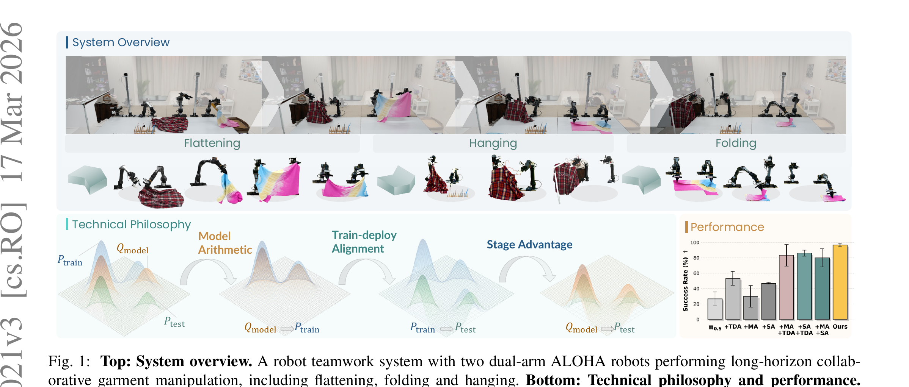

χ₀: Resource-Aware Robust Manipulation via Taming Distributional Inconsistencies
Yu 等 · HKU MMLab / OpenDriveLab · 2026 · arXiv:2602.09021 · Zotero L8L3MBAE
它追求 production-level reliability 与资源效率，贡献是多机制协同而非单点 SOTA loss。
§1 Introduction：作者为什么必须做这篇工作
截图里的“Kai-0”其实是希腊字母 χ₀。论文质疑“更多数据与更大模型必然带来鲁棒性”：长程衣物操作的失败主要来自三种分布不一致，即人类演示分布、模型归纳偏置与测试执行分布彼此错位，错误会跨阶段累积。
χ₀ 用三根支柱解决：Model Arithmetic 在权重空间合并不同演示分布；Stage Advantage 给多阶段任务稳定的密集进度；Train–Deploy Alignment 用时空增强、启发式 DAgger 修正与 chunk smoothing 缩小执行偏移。
展开原文 · 核心动机
“the primary bottleneck to real-world robustness is not resource scale alone”
§2 Related Work：它接在哪些路线之后
模型合并可在不联合重训的情况下融合领域能力；stage-aware RL 解决长程信用；DAgger 与 temporal smoothing 修正闭环分布偏移。过去这些常被分开研究。
χ₀ 的特点是把三者组织成资源受限的生产流程，并在双臂衣物展平、折叠、悬挂上做长时间连续运行，而不是宣称一个单独新 backbone。
§3 问题设定：状态、动作与反馈
多个任务/外观数据先各自得到参数增量，再用 model arithmetic 合并。执行阶段按任务阶段估 advantage，并用部署纠正和时序平滑消除人类演示与机器人动作 chunk 的差异。
§4 方法总览：沿原图走一遍
上一节确定了学习接口；现在看论文原图，追踪观测如何变成动作、环境反馈又如何回到可训练模块。

1. 不同演示分布分别学习任务增量
不同衣物、初态和操作阶段先分别学习参数增量。这样保留了每种演示分布的专长，也能检查某一能力究竟来自哪组数据，而不是一开始把所有异质轨迹混成难以诊断的大训练集。
输入是什么：已经采集的专家演示、机器人交互轨迹或评测样本。每条数据通常包含观测、动作，以及可能存在的奖励或下一状态。
这一步究竟做什么：不同衣物、初态和操作阶段先分别学习参数增量。这样保留了每种演示分布的专长，也能检查某一能力究竟来自哪组数据，而不是一开始把所有异质轨迹混成难以诊断的大训练集。
输出到哪里：经过本步骤处理、含义更明确的中间结果。这个结果会交给下一步“Model Arithmetic 合并互补参数方向”继续处理。
为什么不能省略：学习算法只能从它见过的经历中改进；这一步决定训练数据是否覆盖成功、失败和恢复状态。
2. Model Arithmetic 合并互补参数方向
Model Arithmetic 以共享基座为原点，对各任务增量加权合并。它试图保留方向互补的能力并抑制相互冲突的更新；输出是一套同时覆盖展平、折叠和悬挂的统一参数。
输入是什么：来自上一步“不同演示分布分别学习任务增量”的产物：经过本步骤处理、含义更明确的中间结果。本步骤还会按论文设置读取当前条件、时间步或训练信号。
这一步究竟做什么：Model Arithmetic 以共享基座为原点，对各任务增量加权合并。它试图保留方向互补的能力并抑制相互冲突的更新；输出是一套同时覆盖展平、折叠和悬挂的统一参数。
输出到哪里：参数得到更新的模型，或能供下一轮训练使用的新监督信号。这个结果会交给下一步“Stage Advantage 为长程阶段提供密集反馈”继续处理。
为什么不能省略：它承担上下两步之间的接口；缺少它，前一步产生的信息无法以正确格式或正确含义传到下一步。
3. Stage Advantage 为长程阶段提供密集反馈
长程任务再按阶段估计 advantage，让完成展平、抓取边角、对齐折线等中间进展都获得信用。否则最终衣物状态的稀疏成败会跨十几分钟回传，前面动作几乎得不到可用梯度。
输入是什么：来自上一步“Model Arithmetic 合并互补参数方向”的产物：参数得到更新的模型，或能供下一轮训练使用的新监督信号。本步骤还会按论文设置读取当前条件、时间步或训练信号。
这一步究竟做什么：长程任务再按阶段估计 advantage，让完成展平、抓取边角、对齐折线等中间进展都获得信用。否则最终衣物状态的稀疏成败会跨十几分钟回传，前面动作几乎得不到可用梯度。
输出到哪里：经过本步骤处理、含义更明确的中间结果。这个结果会交给下一步“Train–Deploy Alignment 修正闭环偏移并平滑执行”继续处理。
为什么不能省略：它承担上下两步之间的接口；缺少它，前一步产生的信息无法以正确格式或正确含义传到下一步。
4. Train–Deploy Alignment 修正闭环偏移并平滑执行
部署端用时空增强、启发式 DAgger 修正和 chunk smoothing 对齐训练与真实执行。它处理的是相机、动作延迟和人类示范节奏造成的闭环偏移，最终目标是连续运行稳定性而不只是离线 loss。
输入是什么：来自上一步“Stage Advantage 为长程阶段提供密集反馈”的产物：经过本步骤处理、含义更明确的中间结果。本步骤还会按论文设置读取当前条件、时间步或训练信号。
这一步究竟做什么：部署端用时空增强、启发式 DAgger 修正和 chunk smoothing 对齐训练与真实执行。它处理的是相机、动作延迟和人类示范节奏造成的闭环偏移，最终目标是连续运行稳定性而不只是离线 loss。
输出到哪里：可发送给机器人控制器的动作，以及执行后重新观测到的真实状态。这是图中这条链路的最终产物，随后会进入真实执行、模型更新或指标评测。
为什么不能省略：机器人动作会改变下一次观测；只有执行后重新读取现实，才能发现预测误差并阻止错误连续累积。
§5 机制细拆：为什么这个接口可能有效
阶段优势避免最终衣物状态的稀疏回报把所有折叠/悬挂动作混在一起。
模型合并吸收多分布能力；部署数据只做受控纠正与对齐，减少全量重训。
它追求 production-level reliability 与资源效率，贡献是多机制协同而非单点 SOTA loss。
§6 目标函数：公式逐项读
下面的教学化表达抓住论文的主要更新方向；读它时不要只看符号，要检查回报作用在哪个变量、哪些部分保持冻结。
- $\theta_0$
- 共享基座参数。
- $\theta_i-\theta_0$
- 第 $i$ 个任务/分布学到的参数增量。
- $\alpha_i$
- 各能力方向的合并权重。
- $\theta_{merge}$
- 不重新联合训练即可吸收多种演示分布的最终模型。
§7 训练与评测：数字在什么条件下成立
两套双臂机器人协同完成衣物展平、折叠与悬挂；20 小时数据、8 张 A100，并进行长时间连续运行与多衣物变化评测。
| 学习接口 | 多个任务/外观数据先各自得到参数增量，再用 model arithmetic 合并。执行阶段按任务阶段估 advantage，并用部署纠正和时序平滑消除人类演示与机器人动作 chunk 的差异。 |
|---|---|
| 信用分配 | 阶段优势避免最终衣物状态的稀疏回报把所有折叠/悬挂动作混在一起。 |
| 更新范围 | 模型合并吸收多分布能力；部署数据只做受控纠正与对齐，减少全量重训。 |
| 实验覆盖 | 两套双臂机器人协同完成衣物展平、折叠与悬挂；20 小时数据、8 张 A100，并进行长时间连续运行与多衣物变化评测。 |
§8 结果怎么读：证据与归因
论文报告相对 π0.5 成功率提升近 250%，并展示任意初态下连续 24 小时运行。应把相对提升、绝对成功率、任务分布和人工恢复协议一起读。
§9 复现与工程检查
分别复现三根支柱并做组合消融；记录 24 小时中所有人工恢复与硬件故障；模型合并前检查参数尺度和冲突方向；对比相同 20 小时数据预算。
- 先复现冻结的 SFT/BC 基线，再打开 RL 或偏好更新。
- 同时记录环境步、墙钟时间、人工干预、策略版本和推理延迟。
- 逐任务保存失败轨迹，避免平均成功率掩盖分布偏移。
§10 适用边界与研究启发
衣物系统含大量任务工程与启发式规则；相对提升依赖基线设置；Model Arithmetic 权重在新任务上可能冲突，24 小时运行也不等于开放世界泛化。